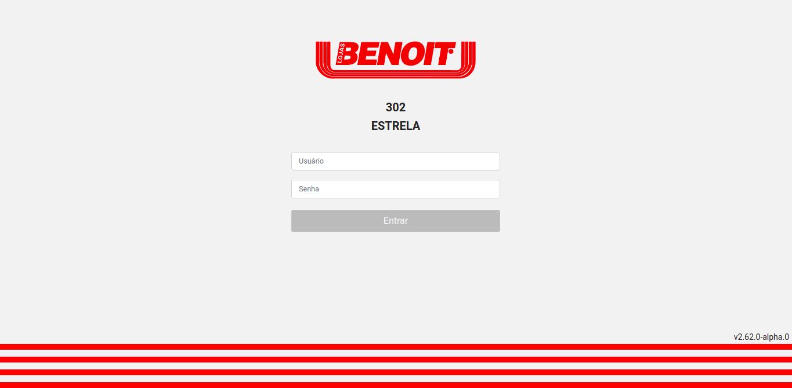

Portifólio
contato
Primeira partipação em projeto interno como estagiário, sistema focado em listar todos os colaboradores
da empresa com suas respectivas skills, certificados e formações, afim de estruturar bons times
para determinados projetos. Com o framework de código aberto VueJs no front-end e PHP
para o backend.
Março de 2020 até setembro de 2020
Segunda partipação em projeto interno como estagiário, sistema focado em realizar avaliações internas de
profissionais onde companheiros de equipe, POs e superioes podiam avaliar o profissional e o próprio
profissional se auto avaliar afim de formar uma avaliação completa. Com o framework de código aberto VueJs no front-end e AdonisJs
para o backend.
Setembro de 2020 até julio de 2021
Projeto atual, participação na parte do front-end no cliente Benoit, como Desenvolvedor JavaScript Júnior,
sistema para vendedores internos da loja, como ponto de venda, afim de realizar negociações e listagem de
produtos. Com a biblioteca de código aberto ReactJs no front-end, React Native para o app
android e Java para o backend.

Projeto atual desde julho de 2021
❮
❯